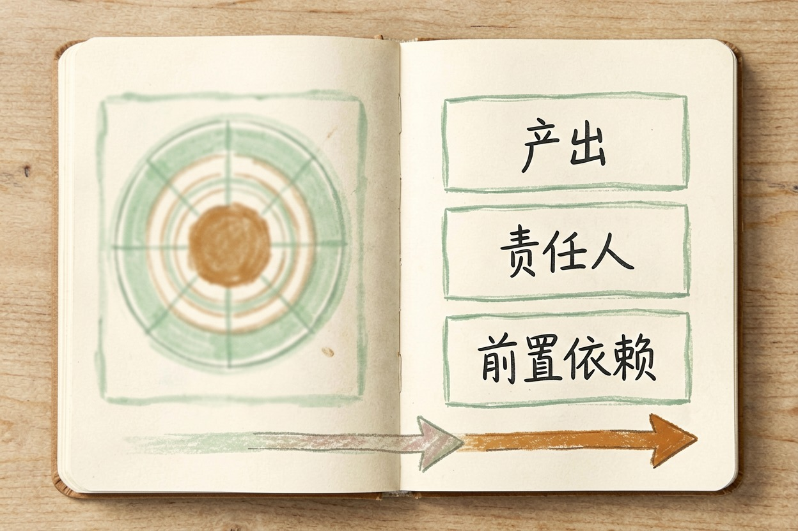
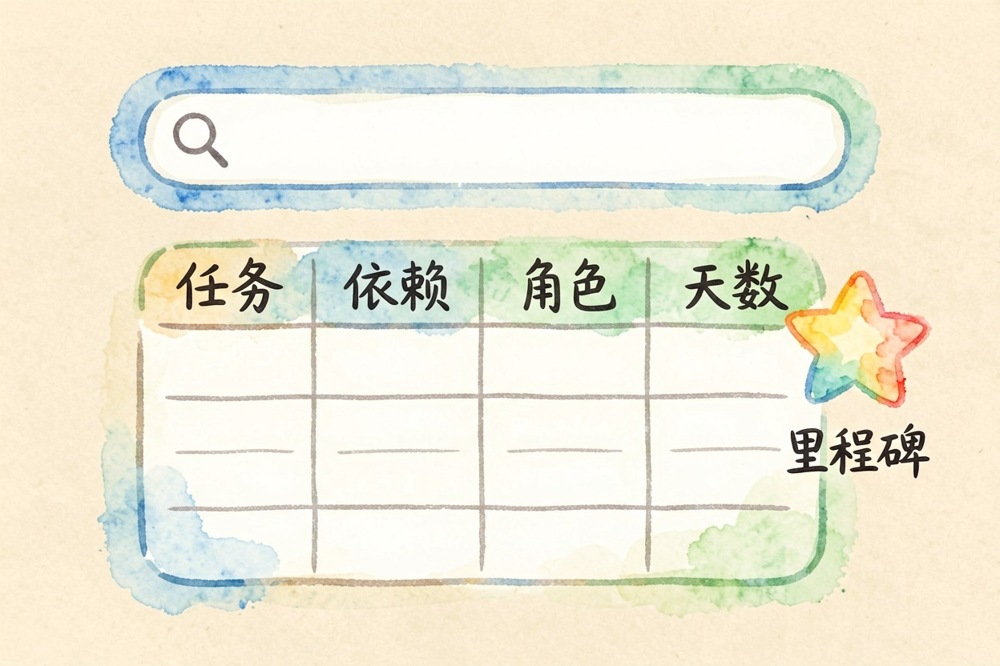
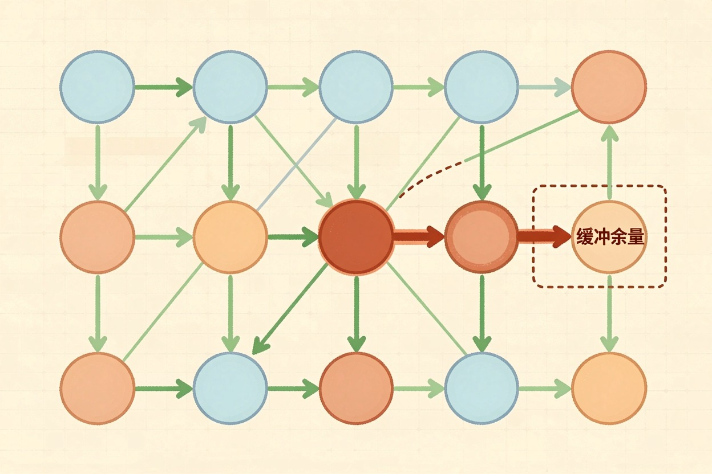
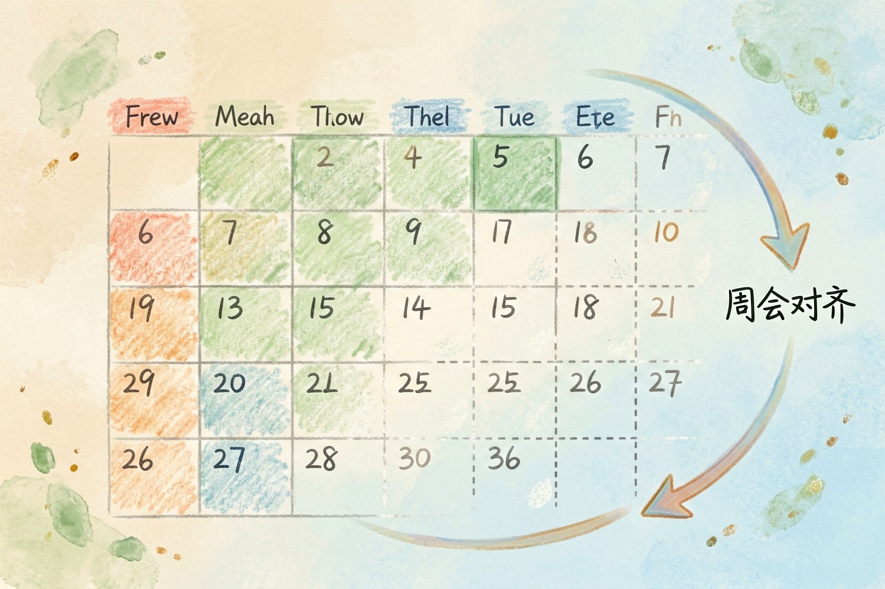
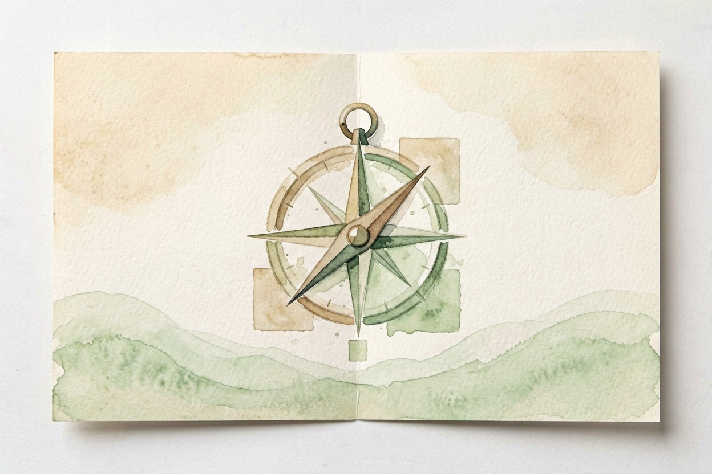

用 AI 排项目计划？拆任务与做进度表 — Learntide
计划写在第一行就卡住的人，多半不是不想做，而是没把任务拆到能直接动手的那一层。
ai做项目计划：先拆任务再排时间

ai做项目计划，好用的地方不是替你想全局，而是把你脑子里那团事摊开，变成一列能勾的清单。你定方向，它帮你铺步骤。
先有目标再开写。目标是「月底上线购物车」，不是「做个项目」。目标清楚，拆出来的任务才不漂。
很多人一开头就让模型给完整排期。它没有你的资源信息，给的时间都是空数。正确顺序是先拆任务，再谈工期。
工具只是载体。Excel 也行，专门软件也行，关键是你真去更新它。先写三句话也行。目标、范围、不做啥，三行定调，模型才好接。
把任务拆到能动手的那一层

一层任务要小到「谁都能直接干」。「做市场调研」太大，「本周约三家供应商电话聊」就够具体。拆到这一步，进度才好跟踪。
每个任务补三样：产出是什么、归谁、卡在谁前面。缺了任意一样，排期表就是花架子。
拆分时让模型多给几版。你挑顺眼的那版改，比从零想省力。它漏掉的依赖，你一眼就能补上。
别贪多一个版本。给模型三个方案你挑，比它给一个你推翻重来快。估工期留证据。写「按上次类似任务三天」，比拍脑袋准，也方便复盘。
一条可直接复制的排期提示词

把目标贴进下面这段：
你是项目管理助手。请基于以下目标排任务：
目标：两个月内上线小程序下单功能
要求：
1 拆成 8 到 12 个任务，每个能在 3 天内完成
2 标出每个任务的前置依赖
3 给出建议责任人角色，不要写具体人名
4 输出表格：任务、依赖、角色、预计天数
5 最后标出一条关键路径，说明哪里最不能拖拿到表先砍重叠。模型常把一件事拆成三件，你合并掉重复的，排期立刻清爽。
里程碑要单独标。比日常任务更该盯，到了没到一眼能看，不用翻整张表。
责任人与关键路径怎么定

责任人按角色填，别急着写真人。等任务定了，再按谁有空谁擅长去分。这样后面换人不至于重排。
关键路径是最长那条链。它上的任务一天都拖不得，资源优先压这里。非关键任务偶发延迟，整体还能扛。
让模型把缓冲也标出来。它常把工期估得刚好，现实里必留余量。你手动给关键任务加一两天空档。
风险任务提前备替补。关键人请假，预案在手里，整体不会被卡死。依赖画成箭头最清楚。谁等谁一眼可见，模型给的文字链容易看漏。
收尾提醒与几个坑
别让模型把工期估死。它不知道你的团队今天还在救火，给的数偏理想。你按经验再砍一刀更稳。
也别一次排满两个月。环境变太快，排太细反而很快作废。先排近两周，跑着再补。
周会拿排期对进度。哪块红了当场说，别等月底才发现全偏了。计划是活的。环境一变就改，死守初版反而误事。
最后一步最该做：计划写完好歹跟团队对一遍。别把 ai做项目计划 当定稿发群，没人认的排期只是一张图。

本文信息核对于 2026-08-08。AI 产品的价格、免费额度与功能变动频繁，实际以各工具官网当前说明为准。